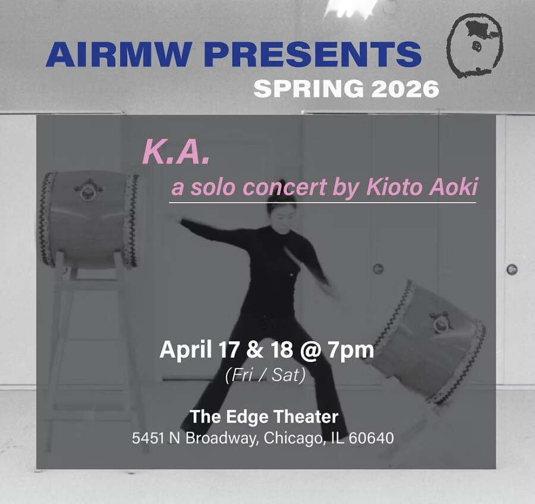

AIRMW Presents: K.A – a solo taiko concert by Kioto Aoki
AIRMW artist, staff & Tsukasa Taiko leader Kioto Aoki presents two evenings of a solo taiko performance at the Edge Theater. Accentuating the elongated nuances of sonic and physical duration, Aoki will play a continuous, concert length set building the momentum of movement and sound textures.
Two nights:
Friday, April 17 @ 7pm
Saturday, April 18 @ 7pm